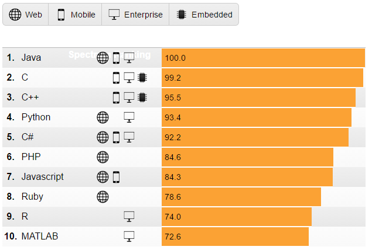

R 병렬 프로그래밍

학습목차
- 고성능 R 아키텍처
- R코드 자동화
- 재현가능한 과학연구를 위한 도커
- 성능 측정과 비교
- 빅데이터
왜 R 언어인가? 1 2
Rexer Analytics가 2015년 응답자 1,220명을 대상으로 실시한 결과 R이 데이터 분석 소프트웨어 분야에서 압도적인 1위 위치를 점유하고 있음을 확인할 수 있다.
 |
 |
xwMOOC는 수학을 사랑합니다.
2차 방정식 \(a x^2 + b x + c = 0\) 에 대한 해답은 …
\[x = \frac{-b \pm \sqrt{b^2 - 4 a c}}{2 a}\]
R 팩키지 설치 4
- R 팩키지명이 제대로 입력되었는지 확인한다.
- R 팩키지는 대소문자를 구분한다.
setRepositories()명령어로 팩키지를 받아올 저장소를 설정한다.setRepositories(ind = c(1:6, 8))와 같이 저장소 설정을Rprofile.site파일에 적용시켜 영구저장한다.
- 설치하려는 팩키지가 저장소에 없는 경우가 있다.
available.packages()명령어로 저장소에서 받아올 수 있는 팩키지를 확인한다."ggplot2" %in% rownames(available.packages())ap <- available.packages(),"ggplot2" %in% rownames(ap)
chooseCRANmirror()명령어로 CRAN 저장소를 설정한다.
- 팩키지, 라이브러리가 아닌 데이터만 필요한 경우는 다음과 같이 데이터만 뽑아낸다.
- 현재 팩키지에 설치된 모든 데이터를 살펴본다.
data(package = .packages(all.available = TRUE))
- 특정 팩키지에 설치된 데이터만 살펴본다.
data(package = "rpart")
- 특정 팩키지에 설치된 데이터를 불러온다.
data(solder, package = "rpart")
- 현재 팩키지에 설치된 모든 데이터를 살펴본다.
- R 코어 엔진의 버젼이 낮은 경우에 팩키지 설치에 문제가 된다.
- R 팩키지가 설치될 때 최근 R 버젼을 요구하는 경우도 드물지 않다.
- 윈도우의 경우 다음 명령어로 간단히 처리한다.
library(installr),updateR()
- 팩키지가 더이상 유지보수되지 않고 아카이빙되어 더이상 서비스 되지 않는다.
R CMD check테스트를 통과하지 못한 경우도 포함된다.
- 윈도우, 맥(OS X), 리눅스 특정 운영체제에 팩키지가 없다.
CRAN (extras)저장소를 찾아본다.- 팩키지 소스파일을 구해서 윈도우즈
Rtools, 맥 OS X XCode 개발툴로 컴파일한다.
- 팩키지가 GitHub/Bitbucket/Gitorious 저장소에서 받아오는 경우
library(devtools)를 설치한다.install_github("packageauthor/foobarbaz"): GitHub에서 설치하는 경우install_bitbucket("packageauthor/foobarbaz"): Bitbucket에서 설치하는 경우install_gitorious("packageauthor/foobarbaz"): Gitorious에서 설치하는 경우
xwMOOC 오픈 교재
- 컴퓨터 과학 언플러그드
- 리보그
- 파이썬 거북이
- 정보과학을 위한 파이썬
- 소프트웨어 카펜트리 5.3
- IoT 오픈 하드웨어(라즈베리 파이)
- 데이터 과학
- 기계학습, 딥러닝, 인공지능
- 기호 수학(Symbolic Math)
- 선거와 투표